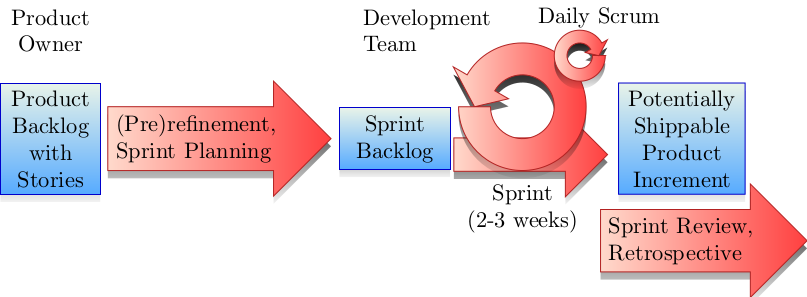

Large-scale data-driven analysis of
Scrum software development
practices
Research
Overview
The Grip on Software (GROS) project performs a
scientifically grounded research into the effects
and effectiveness of various practices within
software development processes. Specifically, we
focus on investigating the use of
Scrum, an Agile software
development method. We study the efficacy of events
and of actions that take place during the
development cycle, including code changes and team
meetings. Finally, we forecast the outcome of the
process or detailed divisions of it, including the
successful release of the product.
The GROS project is a collaboration between the
Leiden Institute of Advanced Computer Science
(LIACS)—as part of
Leiden University—and
Stichting
ICTU, an independent government-owned
organization in the Netherlands.
Research in large-scale data analytics of software
development is increasingly important because such
projects are often high-risk with funding of public
money and application of novel technologies.
Furthermore, many end-users of citizens may be
impacted by the success or failure of the project.
Many factors play a role in the quality
reliability, usability, security and effectiveness
aspects of the developed product, which are
measurable during the advancement of the developed
product increments.
Models
We first model the software development ecosystem
as a whole, including actors, information sources,
stages and transitions. This flexible yet specific
model explains the behavior we observe in the
process and allows for comparisons with existing
frameworks as well as perform model validation
using models from other applications that share
some intrinsic similarities, such as predator-prey
models, arrangements of factory pipelines and
(self-)learning environments.
These models provide us with insights and different
viewpoints of the inner workings of agile software
development practices, such as
Scrum, Lean and
extreme programming. This forms the basis for
extracting information from the process.

Data
Software development projects have their own unique
set of instances of tools used during the process,
where there is usually a core selection of systems
there are essential to the process, regardless of
methodology. These tools are version control
systems, e.g.,
Git or
Subversion, potentially combined with
a built-in code review and tracking utility
provided by services like
GitLab,
GitHub and
Azure DevOps Server
(formerly TFS
and VSTS).
User stories, bug reports and technical backlogs
are often managed separately using project tracking
software such as
Jira. Inspection of software quality is
provided by platforms such as
SonarQube.
Automated build and continuous integration
pipelines are served by systems like
Jenkins.
Additional project registration systems for
authorization control and meeting reservations also
play a role.
We consider all of these tools as feasible sources
of information for our research, because they each
provide disclosure of specific parts of the
development process. Many tools store the complete
record of actions taken within the timeline of the
process for the purpose of referencing or auditing
these actions at a later moment. Some tools provide
limited aggregation of their own data, such as burn
down charts, but these are always restricted to the
data available within the tool itself.
We construct the GROS data acquisition pipeline,
an automated data pipeline to extract metrics,
events and metadata from these systems and tools,
which combines the data sources and links relevant
events where possible. This database forms the basis
for a data set of features, which we used for
machine learning and information visualization.
Security
Privacy and security play an important role during
the entire research project. All data is stored on
secured servers with full disk encryption. The
transfer of data only occurs in secure networks or
through the use of HTTPS and GPG encryption.
Personal information is treated specially. The
names of the people that are involved in a software
development process, including the project leaders,
clients and developers themselves, are obfuscated
using one-way encryption immediately when the data
is collected. This means that one can only
determine whether someone is involved in a project
if the attacker already has the personal
information as well as the original encryption key,
which always remains at the source location.
We collect personal information only to uniquely
identify the same actor across development
platforms used within the same project. Standard
obfuscation techniques would be insufficient for
this purpose. Our intention is to provide feedback
of results on a project level, but details about
actor roles may still help in this aspect.
The raw data is only handled by researchers of the
GROS project after certificates of good conduct,
non-disclosure agreements and privacy impact
assessments have been produced or signed. Personal
data and project-sensitive information is never
shared with anyone outside of the project.
Prediction
Our goal is to determine how we can effectively and
accurately make use of the factors that strongly
determine the success or failure of a software
development process, using multiple means to measure
these factors and the success factor. Finally, the
aim is to design and implement an automated system
that provides a recommendation regarding the risk,
explains how the risk was measured and provides
recommendations on how to reduce this risk.
Since there exist different kinds of development
processes with different means of determining
the risk during the lifespan of a project, we focus
on a group of methodologies known as Agile software
development. In particular, we look at the
Scrum framework, which
makes use of short time frames known as sprints,
where developers commit to a number of goals that
they think are reachable during this time. The
developers then commit to implementing the desired
features corresponding to those goals. This
provides us with a large set of historical
information of measurable events at various time
ranges, as well as some feedback about whether the
developers and the client was satisfied with the
process and the delivered product increment.
We focus on determining whether the developers reach
all of their goals completely within the allotted
time, through the use of various machine learning
algorithms which learn from past sprints and provide
an indication of the risk. We also estimate the
effort required to undertake the user stories and
other goals at hand. This allows us to find what
kinds of properties are relevant to reaching the
goals with more certainty.
Detailed information regarding the predictions of
upcoming sprints are provided in an overview
dashboard, through the use of
information
visualizations. The data set used for
training, testing and validating the models that
provide the risk classification and estimations
based on similar sprints are also
made available for
further scientific inquiry.
Visualization
Aside from the prediction result, we provide
distinct but intertwined visualizations which allow
people within the organization to inspect the
collected data set and view all kinds of events,
statistics and properties in a new way that
existing tools do not make available.
We specifically make comparisons between projects
from the same organization easy such that teams can
learn from each other, provide context to their
practical methodologies and help think about
improvements to the entire process.
The visualizations that we offer at this point are:
a timeline of events occurring in the
lifespan of a project as well as of
individual or multiple sprints, including a
linked burn down chart;
a heat map showing a calendar of code
commit volumes per day while ensuring that
projects of different sizes are comparable
using color map scaling, with a mode to find
extraordinary changes, as well as
integration with external calendar data such
as weather and traffic;
a collaboration graph exhibiting the
tight network within an organization where
teams help each other at various times of
their project lifespans, including a time
lapse mode;
a leaderboard where statistics about
different projects are presented in an
interactive fashion, allowing users to delve
through and combine different attributes,
while still providing measures relevant to
the attributes;
a status dashboard showing the health
and resource usage of projects in virtual
networks where containers are deployed during
development, with support for historical data
comparisons;
a visualization that displays the
workings of various parts of the process, such
as the flow of that issues follow;
more formats that provide options to generate
customized reports, including details,
attributes and results from our predictive
pipeline.